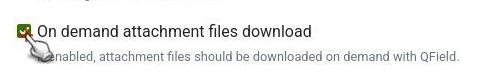
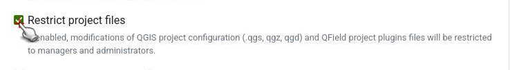
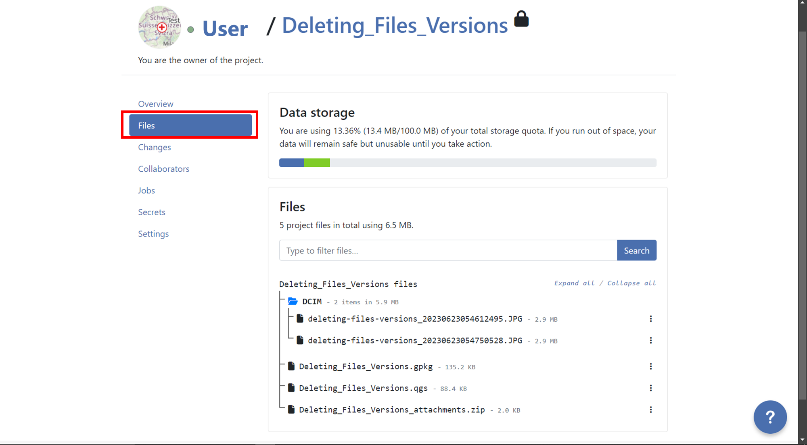
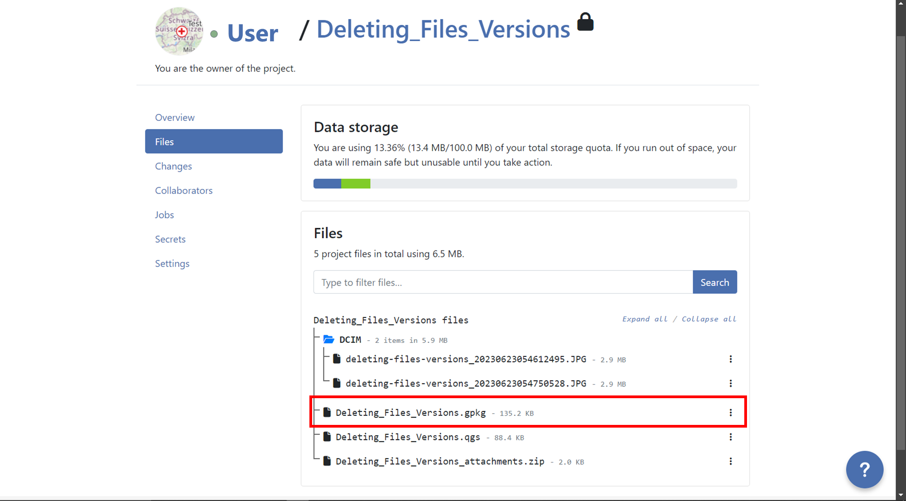
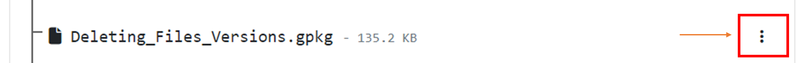
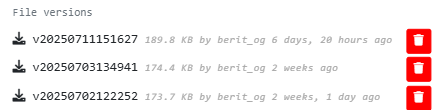
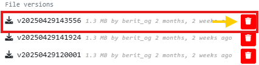
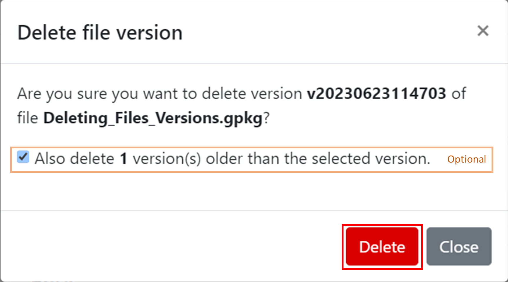
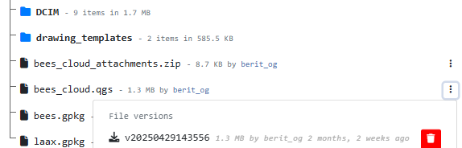

Tips and Tricks for your QGIS project¶
This page will give you an overview of all the tips and tricks you can apply to your project and general workflow to minimize synchronization errors, work efficiently and save storage.
Project Configuration Best Practices¶
To ensure a smooth synchronization process between QGIS, QField and QFieldCloud, follow these recommendations.
1. Centralized Data Storage - Add all data in the same folder as your .qgs project file
Before uploading your project, ensure all relevant data sources (GeoPackages, rasters, etc.) are located in the same directory as your project file (.qgs/.qgz)
or in a subdirectory (e.g., ./data, ./assets).
If files are spread across different drives or folders on your computer, QFieldSync and QFieldCloud may fail to package them correctly for the mobile device.
2. Managing Unique IDs - Add a unique ID to your layers
When multiple users collect data offline simultaneously, standard auto-incrementing IDs (1, 2, 3...) will result in conflict errors when applying the deltas changes data on QFieldCloud.
- For Relations: Create a specific text field (e.g.,
survey_uuid) and useuuid()oruuid('WithoutBraces')as the default value. Use this field for all foreign keys and for primary key if the layer is from PostgreSQL/PostGIS. - For the
fid(Feature ID): If you are working with GeoPackages, you can reduce conflicts on the internalfidinteger column by setting the "Default Value" to the expressionepoch(now()). This generates a unique integer based on the current timestamp.
Tip
To set this up, go to Layer Properties > Attributes Form, select the fid field, and set the Default Value to:
epoch(now())
3. Relative Paths - Ensure that all attachment paths are relative
Absolute paths (e.g., C:\Users\{username}\Downloads\photo_001.jpg) will break when the project is transferred to a mobile device (Android/iOS),
as the file system structure is different.
Flujo
- Navigate to Project > Properties... > General.
- Set Save paths to
Relative.
4. Stable Layer References in Expressions - Use the Layer Name in expressions, not the Layer ID
When writing expressions (for example, inside aggregate() or relation_aggregate()) functions,
QGIS allows you to reference layers by their internal ID (e.g., places_2348274...) or their Name (e.g., Places).
Always use the Layer Name (e.g., Places).
Why? The internal Layer ID changes if you remove and re-add a layer or internally in QFieldCloud when a packaging job is triggered could change, which breaks your expressions. The Layer Name remains stable as long as you do not rename it in the layer tree.
5. Formatos de archivo preferidos - Convertir sus capas a GeoPackage
QField y QFieldCloud están optimizados para el formato GeoPackage (.gpkg)
Aunque QField y QFieldCloud admiten otros formatos, como archivos Shape (.shp), GeoJSON y KML, etc., se recomienda encarecidamente convertir esas capas a GeoPackage antes de comenzar su proyecto.
¿Cómo convertir a GeoPackage?
Flujo
- En QGIS, haga clic derecho en su capa en el árbol de capas.
- Seleccione Exportar > Guardar objetos como...
- Establezca Formato a
GeoPackage - En Nombre de archivo, pulse
...y navegue a la carpeta de su proyecto. Dele nombre a la nueva base de datos (ej.: notas_puntos.gpkg`) - En Nombre de la capa, dele un nombre sencillo a su capa (ej.:
notas_puntos) - Pulse OK
- La nueva capa se cargará en el proyecto. Ahora puede eliminar la capa antigua
6. Modular File Structure - Store one layer per GeoPackage
QFieldCloud manages versions and backups at the file level. Every time changes are synchronized, a backup of the modified file is created.
- The Risk: If you store multiple layers in a single GeoPackage (e.g.,
survey_data.gpkgcontaining Trees, Roads, and Buildings), restoring a backup to fix an error in the Trees layer will also roll back valid work done on Roads and Buildings during that same period. - The Solution: Save each layer in its own separate GeoPackage (e.g.,
trees.gpkg,roads.gpkg). This allows you to restore a previous version of one specific layer without losing data in others.
Common Configuration Errors¶
If you are experiencing synchronization issues, check for these common configuration errors:
| Issue | Cause | Solution |
|---|---|---|
| Missing Images | Paths are set to "Absolute" | Go to Project Properties and set paths to "Relative". |
| Sync Failures | Data is outside the project folder | Move all .gpkg and raster files into the same folder as the project file (.qgz/.qgs). |
| Expression Errors | Layer ID used in expression | Update expressions to use 'Layer Name' instead of 'Layer_ID_123'. |
| Duplicate Keys | Using default 1, 2, 3 IDs | Implement uuid() or epoch(now()) for unique identification. |
Download attachments only on demand¶
In the QFieldCloud settings you can set your attachments to be only downloaded on demand. This is particularly useful when you work with an abundance of photos and do not need all your attachments at once.
Flujo
To enable this feature:
- From the QFieldCloud landing page, select your project.
- Direct to Settings.
- Enable the "On demand attachment files download" option.

{kind=link}
Note
This feature can be activated during project creation or enabled at any time for existing projects. You need to be online to download the attachments on demand. If you work offline, it will only show a blank screen.
Restricción de archivos de proyecto¶
If you work in field operations which involves a lot of users, it may be useful to restrict the QGIS project file to prevent all users with editor rights to download the project and make changes to the configuration. To prevent any modification to the core QGIS project file, the project administrator can restrict the access to these files. This can be achieved under the settings section in QFieldCloud.
Flujo
- From the QFieldCloud homepage direct to Settings
- Enable the
Restrict project filesbutton
{kind=link}
Una vez configurado, solo los administradores y gerentes podrán aplicar cambios a los archivos mencionados anteriormente. Otros colaboradores del proyecto podrán cargar y modificar otros archivos, como datos en GeoPackages, pero no podrán modificar el archivo principal ni sus componentes principales.
Archivos restringidos¶
Cuando esta opción está habilitada, los siguientes archivos solo pueden ser modificados o cargados por un usuario con un rol de "administrador" o "gerente" para el proyecto:
- El archivo de proyecto QGIS principal (por ejemplo,
my_project.qgz). - El archivo zip de archivos adjuntos asociado con el proyecto (por ejemplo,
my_project_attachments.zip). - Archivos de datos auxiliares de QGIS que almacenan información como posiciones de etiquetas (por ejemplo,
my_project.qgd). - Archivos de estilo QField (
.qml) que comparten el mismo nombre que el archivo del proyecto.
Saving storage¶
Borrar versiones de archivo antiguas¶
You can reduce the number of versions you want to keep of any given file to reduce the amount of storage needed by accounts. One can manually delete file versions from the project's File section. Each file and version can be linked to a specific QFieldCloud user who uploaded it.
Flujo
- Go to the "Files" section of your project.

- Locate the layer for which you want to delete versions.

- Click on the 3-dotted menu (⋮) next to the layer name.

- You will see a list of versions for that specific layer.

- Identify the version you want to delete and click on the red trash bin icon next to it.

- Confirm the deletion when prompted, if you want to delete all versions before a specific version, you can do it activating the option "Also delete
nversion(s) older than the selected version.".
- After deleting a pop up message will appear with the success and the list of versions will show just the versions that was not selected for deletion.

Set maximum pixel size of attachment¶
If you want to further save space and you are working with attachments, you can reduce the pixel size. This will lead to lower image quality but take less storage on QFieldCloud. You can direct to the How-To of the Attachment Widget to see the step-by-step instructions.
Automating file deletion with QFieldCloud SDK¶
If you accumulate many attachments (such as high-resolution photos) during fieldwork and want to free up space automatically without manually deleting them from the web interface, you can utilize the QFieldCloud SDK.
By setting up a script or a cron job using the QFieldCloud SDK, you can periodically purge specific file types (e.g., .jpg or .mp4) to keep your storage usage low.
For full details and code snippets, see the QFieldCloud SDK Documentation.
To routinely free up storage quota on QFieldCloud, you can delete unnecessary files, such as heavy .jpg attachments using glob patterns.
client.delete_files(
project_id="123e4567-e89b-12d3-a456-426614174000",
glob_patterns=["*.csv", "*.jpg"],
throw_on_error=True
)
qfieldcloud-cli delete-files '123e4567-e89b-12d3-a456-426614174000' '*.jpg'
qfieldcloud-cli delete-files "123e4567-e89b-12d3-a456-426614174000" "*.jpg"